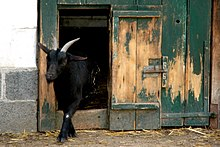
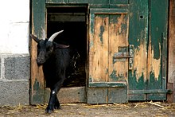

Koza domáca (Capra hircus, Capra hircus hircus, Capra aegagrus hircus) je druh či poddruh z rodu Capra. V slovenskom poľnohospodárstve je to menej významné hospodárske zviera, jej chov je v prevažnej miere iba doplnkovým odvetvím živočíšnej výroby. Bežnejší je chov kôz menšími chovateľskými subjektmi, alebo u súkromných osôb. Koza poskytuje hodnotné mlieko, mäso, kožu, rohovinu.Chov kôz je na Slovensku realizovaný predovšetkým pre ich mliekovú úžitkovosť. Najbežnejšie chované plemená kôz u nás by podľa plemenných štandardov mali dosahovať 900 - 1000 kg mlieka za rok. Ak sa prihliadne na živú hmotnosť kozy, tak môžeme konštatovať, že ralatívne dosahuje najvyššiu dojnosť z hospodárskych zvierat, až 10 - 20 násobok živej hmotnosti. Chov kôz na Slovensku po prudkom poklese stagnuje, v roku 2000 bolo do kontroly mliekovej úžitkovosti zapojených 16 chovov, v roku 2003 a 2004 to boli len tri chovy a v roku 2005 štyri chovy. Ku koncu roka 2005 sa na Slovensku chovalo 39,6 tis. kôz [1]. Najväčším problémom v chove kôz je v podstate neexistujúci trh kozích produktov. Veľkokapacitné mliekárne kozie mlieko nespracovávajú. Aj preto je chov kôz na Slovensku prevažne doménou drobnochovateľov s počtom zvierat do 10ks v stáde.
 
